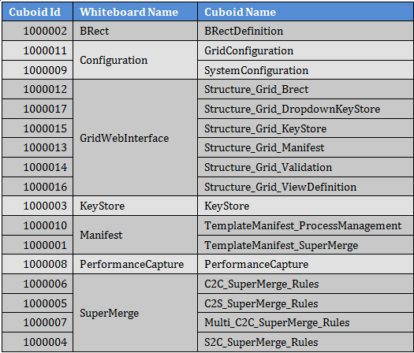
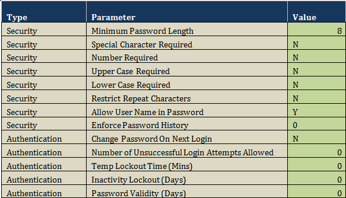

Server Setup - BAE Version 4.6 Release BAE-SQ-M-20190719
-
-
2. Pre-requisites
• Microsoft SQL Server is installed on the Database server
• Java is installed on Application server
• Apache Tomcat is installed on Application server
-
3. Installation Package
Installation package consists of following files:
1. BAE_4_6.war
2. Documents.zip
3. SQLScripts.zip
4. Templates.zip
5. bcvm_v2.1.0.zip
-
-
5. Installation
Boardwalk Setup includes following installations :
1. Boardwalk Database Installation
2. Boardwalk Web Application Installation
3. Boardwalk Templates Installation
4. Boardwalk Virtual Machine Installation
-
5.1. Boardwalk Database Installation
Unzip the file SQLScripts.zip in which there will be 8 SQL files like below.
Execute the extracted files in the following order.
1. 01_Create_Login.sql
2. 02_Create_Database.sql
Note: Replace the string ‘BAE_4_6’ with desired database name and change the path for MDF and LDF file creation.
3. 03_Create_Tables.sql
Note: Replace ‘BAE_4_6’ with desired database name.
4. 04_Create_Table_Types.sql
Note: Replace ‘BAE_4_6’ with desired database name.
5. 05_Create_Procedures.sql
Note: Replace ‘BAE_4_6’ with desired database name.
6. 06_Create_Functions.sql
Note: Replace ‘BAE_4_6’ with desired database name.
7. 07_Default_Values.sql
Note: Replace ‘BAE_4_6’ with desired database name.
8. 08_Create_Objects.sql
Note: Replace ‘BAE_4_6’ with desired database name.
-
5.2. Boardwalk Web Application Installation
1. Copy the file BAE_4_6.war in /webapps folder.
2. BAE_4_6.war file will extract automatically under the webapps folder with a folder named as BAE_4_6.
3. Rename the extracted folder with desired name.
4. Make the following changes to web.xml file (/WEB-INF/web.xml).
5. Delete BAE_4_6.war from webapps folder.
6. Restart Tomcat.
Below are the changes to WEB.XML file which are mentioned in the Step 4.
a. Tomcat Path Changes
Replace the string BAE_4_6 with the application name created in Step 3.
b. HttpOnly Configuration
Set the below highlighted flag to true (if Web Protocol is HTTPS) or false (if Web Protocol is HTTP).
c. Database Parameters Configuration
Notes:
1. The above configuration for Database Credentials is for encrypted credentials. In case the application needs to be configured with the credentials in the plain text format, ‘credentialsEncrypted’ parameter should be changed to ‘false’.
2. The above configuration for Database with SSL is in disabled state. ‘enableSsl’, ‘encrypt’, ‘trustServerCertificate’, ‘hostNameInCertificate’ parameters need to be configured accordingly in case the SSL enabled Database.
d. SMTP Parameters Configuration
-
5.3. Boardwalk Templates Installation
Unzip the file Templates.zip in which there will be 3 templates like below.
1. ProcessManagementTemplate/Process_Management_Template_v_3.4.xlsb
2. SuperMergeTemplate/SuperMerge_Template_v_3.4.xlsb
3. UniversalTemplate/BCCF_Template_v_3.4.xlsb
Please use these templates as per your requirements with the reference of respective User Manuals from Documents.zip file of the installation package.
-
6. Verification
1. Verify Boardwalk Application from browser.
Ex: http://localhost:8080/BAE_4_6/MyCollaborations
2. There is an Administrator user already created with Username ‘admin’.
Use this Username and default Boardwalk Password to login.
3. The ‘ROOT’ Neighborhood is already existing in the application and the default members in this Neighborhood are ‘admin’ and ‘BOARDWALK_INTEGRATION’ (Integration User)
4. Under ‘ROOT’ Neighborhood, there is a default Collaboration with name ‘SYSTEM’ which should be used strictly for product level Whiteboards and Cuboids.
Note: Do not use this Collaboration for project specific Whiteboards and Cuboids. Please create new Collaborations for the same.
5. The SYSTEM Collaboration will have the below default Whiteboards and Cuboids.

6. Configure Boardwalk Template to connect with newly configured Boardwalk Server.
-
7. User Authentication Setup
Once all the above setup is done, User Authentication Setup should be configured as per the requirements.
To configure the User Authentication Setup, please follow the below steps
1. Open the Process Management template which is downloaded in Section 5.3.
2. Go to ‘System_Properties’ sheet to connect the template with the Webapp by providing the URL.
3. Go to ‘Welcome’ Sheet and Download the data.
4. Go to ‘SystemConfiguration’ Sheet which will have the below data.

5. There will be 2 different Types named as ‘Security’ and ‘Authentication’. The items which belong to Security Type are used to set up the Password Complexity whereas the items belong to Authentication Type are used to configure the User Authentication Set up.
6. All the data in the ‘Value’ column is the default data and most of these functionalities are in disabled state. The values should be changed in order to implement the behavior described in the ‘Parameter’ column.
7. Below is the explanation about each item
a. Minimum Password Length
Password with less than this value will not be accepted. The minimum value which can be set to this value will be equal to the number of YES flags(Y) of the remaining items of the Security type.
For Example, if 2 values are Y for the items of Security Type, the minimum value which we can set for ‘Minimum Password Length’ is 2.
Set the value to 0 to disable this feature.
b. Special Character Required
If Y, the password without at least one special keyboard character will not be accepted while resetting the password.
Set the value to N to disable this feature.
c. Number Required
If Y, the password without at least one numeric character will not be accepted while resetting the password.
Set the value to N to disable this feature.
d. Upper Case Required
If Y, the password without at least one upper case character will not be accepted while resetting the password.
Set the value to N to disable this feature.
e. Lower Case Required
If Y, the password without at least one lower case character will not be accepted while resetting the password.
Set the value to N to disable this feature.
f. Restrict Repeat Characters
If Y, the password with repeated characters will not be accepted while resetting the password.
Set the value to N to disable this feature.
g. Allow User Name in Password
If N, any part of the Username will not be accepted as the password while resetting the password.
Set the value to Y to disable this feature.
h. Enforce Password History
This is the maximum number of last passwords which are not allowed as the current password.
Set the value to 0 to disable this feature.
i. Change Password On Next Login
If Y, user should change his password to login to the system for the first time.
Set the value to N to disable this feature.
j. Number of Unsuccessful Login Attempts Allowed
This is the maximum number of times the user can try to login to the system with invalid credentials.
The counter will increase by 1 with every unsuccessful attempt and the user account will be temporarily locked once it reaches this value.
Once the user account is locked, user needs to wait for some time to login again. This wait time needs to be set for the next item ‘Temp Lockout Time (Mins)’
Set the value to 0 to disable this feature.
k. Temp Lockout Time (Mins)
This is the number of minutes the user needs to wait to login to the system once the user account is temporarily locked. The account will be unlocked automatically after these many minutes.
Set the value to 0 to disable this feature.
l. Inactivity Lockout (Days)
The user account will be permanently locked if user hasn’t performed any operation on the system. If any user account is permanently locked, only administrator can unlock.
Set the value to 0 to disable this feature.
m. Password Validity (Days)
User cannot use the password for more than these many days and the user is not allowed to login to the system once the validity is over. User will be prompted an option automatically to reset the password.
Set the value to 0 to disable this feature.